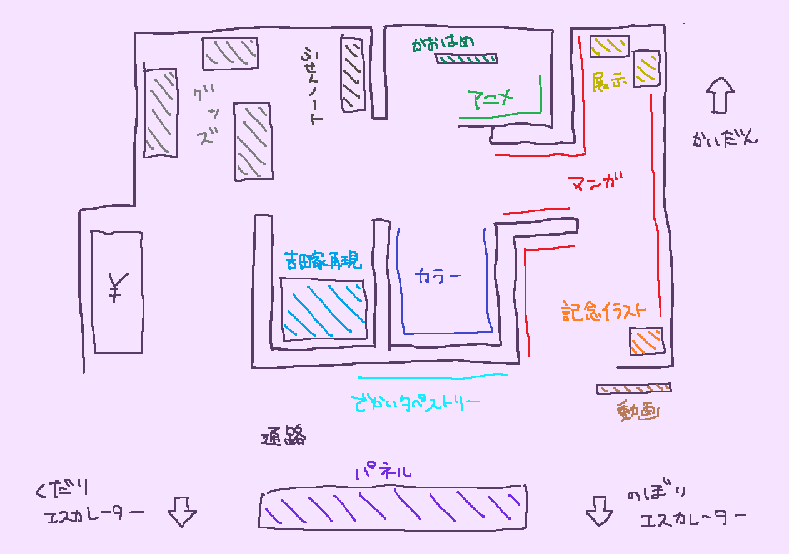
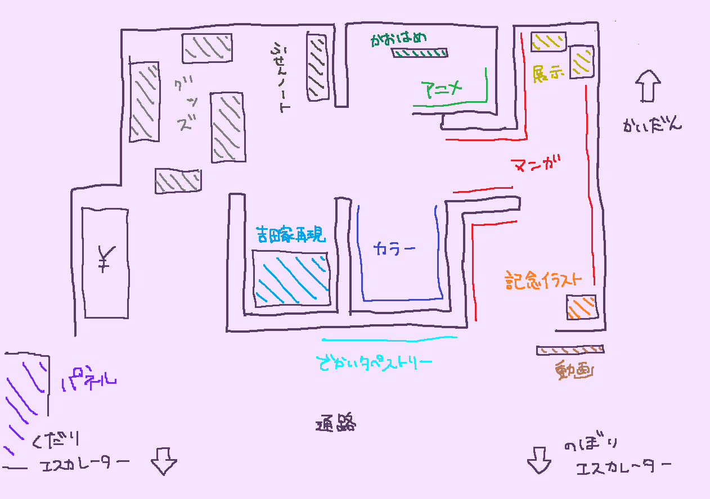

更新日：６月２６日
行った日：６月７日、６月２３日
場所：渋谷マルイ7階
会場は以下のような感じ
補足：６月２３日時点では↓
動画->まちカドまぞく2丁目のPV（https://youtu.be/GEe40BIkfGA）が流れています。
記念イラスト->伊藤いづも先生の特別イラストが立てかけてあります。
マンガ->６巻までの４コマが壁に展示されています。「出会い集」「これで勝ったと思うなよ集」など複数のジャンル分けられ、４コマ２ページごとに１つの額縁に入れられています。（https://twitter.com/medicos_et_02/status/1532683084885131265/photo/3）
展示->シャミ子・桃のフィギュアとご先像貯金箱（撮影可能）に加え、声優さんのサイン入り台本、色紙など（撮影不可）がショーケースの中に展示されています。
カラー->マンガ6巻までの表紙や、きららキャラットの表紙になったイラスト、マンガ購入特典のカードイラストなどが壁に展示されています。（https://twitter.com/medicos_et_02/status/1532683084885131265/photo/4）
アニメ->アニメの1シーンを切り抜いたイラストが壁に飾られています。
かおはめ->白澤（バク）と並ぶたまさくらちゃんの顔はめパネルがあります。
吉田家再現->吉田家の居間が再現されたスペースです。靴を脱いで立ち入ることができます。カーテンや窓がタペストリーになっていますが、おとーさんボックスや壁に貼られたトレーニングメニュー、鉄板の時折れたひっくり返すやつなど、小物が揃えられています。床はござです。天井の照明からは桃のてるてるぼうずがぶらさがっています。ティッシュが用意されていて、てるてるぼうずめがけて投げる遊びができます。（ティッシュは自分で回収します）
ふせんノート->来場者が付箋に自由に書き込んでノートに貼るスペースです。
グッズ->壁から離れた棚には、タペストリーやアクリルキーホルダー、クリアファイルが置かれています。壁沿いの棚には等身大ご先像、公式設定資料集、キーホルダー、バッヂ、コップ、アクリルスタンド、ボールペン、抱き枕カバーなどが置かれています。桃てるてるぼうずなどの受注生産グッズはありませんが、購入ページのQRコードが貼られています。（https://www.tbs.co.jp/anime/machikado/news/news20220526_01.html）
補足：購入金額÷1000円だけイラストカードがもらえます。（絵柄はランダム）
補足２：クレジットカードの「エポスカード」にその場で初回登録すれば、買った分もらえるイラストカード＋イラストカード全種類＋2000円OFFの特典がついてくるそうです。
混雑->平日はさほど混んでいません。平日昼であれば10人程度です。
でかいタペストリー->壁一面に貼られたでかいタペストリーです。（https://twitter.com/medicos_et_02/status/1532683084885131265/photo/1）
パネル->ブライダル衣装の（おそらく）等身大パネルです。（https://twitter.com/medicos_et_02/status/1532683084885131265/photo/2）